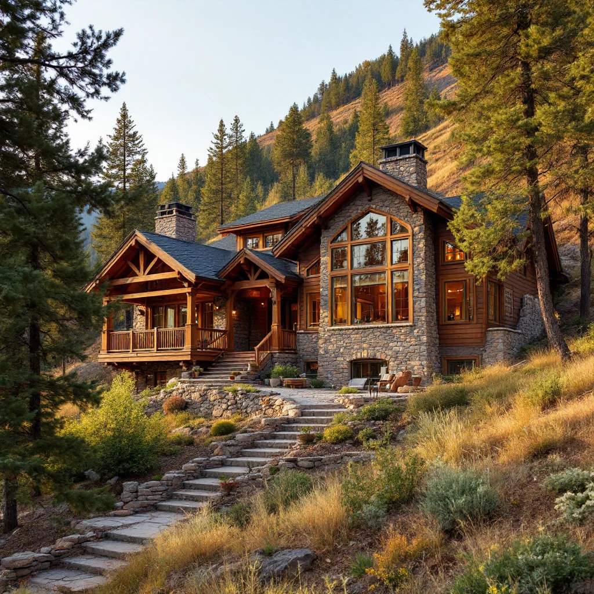

Found Mold? Here's What You Need to Know First.
Manitou Springs has a mold environment unlike anywhere else along the Front Range. The narrow canyon traps moisture from multiple sources simultaneously — Fountain Creek, the natural mineral springs, canyon fog, and limited solar exposure on north-facing walls and basements. Add historic construction from the late 1800s through the mid-1900s, and you have a combination that creates persistent mold conditions year-round rather than just seasonally.
Mold in a Manitou Springs home is a real problem and a solvable one. The key is making sure it's handled correctly — containment, proper removal, moisture source addressed, and testing to confirm the job is actually done. In older homes especially, the visible mold is rarely the whole story.

What Makes Mold Different in Historic Manitou Springs Homes
Modern construction uses vapor barriers, pressure-treated wood, and moisture-resistant materials. Manitou Springs' Victorian and Craftsman homes were built with none of these. Here's what that means for mold risk:
Original rubble stone and brick foundations absorb moisture directly. There is no membrane between the soil and the foundation in most pre-1950 Manitou construction. Groundwater and soil vapor migrate continuously into basements and crawl spaces.
Original plaster and lath walls hold moisture differently than drywall. Mold in plaster walls often starts behind the material and works forward — the surface looks fine until the damage is significant.
Old-growth wood in joists and framing is more resistant but not immune. Prolonged moisture exposure in any wood eventually creates mold conditions, and the older structural wood in these homes has had decades of exposure.
Without containment, spores spread. In a small historic home with limited airflow, disturbing mold without proper containment affects the entire living space rapidly.
How We Handle Mold Remediation Near Manitou Springs
- Free Inspection: A certified technician assesses the affected area with moisture meters and visual documentation. Written scope and price before any work starts.
- Containment: Plastic sheeting and negative air pressure isolate the work area. In tight historic home floor plans, this step is especially critical.
- Remove and Treat: Contaminated materials are removed. Structural wood is HEPA-vacuumed and treated with antimicrobial solution designed to penetrate porous surfaces.
- Moisture Source Addressed: Foundation moisture management, exhaust ventilation, or drainage corrections are identified and either addressed or clearly scoped for follow-up.
- HEPA Air Scrubbing: Commercial air scrubbers run in the containment zone before it opens to the rest of the home.
- Clearance Testing: Independent air sampling confirms spore counts are back to normal levels. Written documentation for your records.
What Homeowners Near Manitou Springs Are Saying
"1920s bungalow, stone foundation basement. Musty smell we'd lived with for years. Turned out to be significant mold on the floor joists and subfloor — completely hidden. Full remediation, treated the joists, addressed the drainage issue. Air test cleared. The smell is gone."
— Patricia H., Manitou Springs"Bought a Victorian in Manitou and the inspection didn't catch the mold behind the bathroom wall. Was there for years. Springs Mold Solutions found it during a free inspection, scoped it accurately, and fixed it. No surprises on price."
— David M., Manitou SpringsWhat Does Mold Remediation Cost Near Manitou Springs?
Small area (under 10 sq ft): $500–$1,500
Mid-size (10–100 sq ft): $1,500–$4,000
Large / whole-room or structural: $4,000–$9,000
Post-remediation clearance testing: $300–$500 (independent, third-party)
Historic home jobs often end up mid-range or higher because moisture infiltration in older construction has typically been ongoing for years and covers more area than initially visible. The free inspection scopes the actual extent before you commit to a price.
Quick Answers Before You Call
Why do historic homes in Manitou Springs have more mold problems?
Pre-1950 construction lacks the vapor barriers, moisture-resistant materials, and drainage systems used in modern homes. Combined with the canyon's persistent humidity from the mineral springs and Fountain Creek, these homes absorb moisture through foundations and walls continuously. The mold conditions are often present year-round, not just seasonally.
Does the canyon setting make mold worse?
Yes. The Ute Pass canyon traps humidity and limits solar drying on north-facing walls and basement areas. Manitou Springs homes experience higher ambient humidity than the Colorado Springs metro area, which means mold growth cycles are longer and more persistent.
Do I need to vacate during remediation?
For small contained jobs, you can stay while avoiding the work area. For larger projects or significant Stachybotrys involvement, we advise based on scope and your household's health situation.
How long does a typical job take?
Small to mid-size jobs: one day. Larger projects involving multiple areas or structural material removal: 2–3 days. We provide an exact timeline in your written estimate.
Mold Doesn't Pause. Neither Should You.
The inspection is free. You'll know what you're dealing with, what it'll cost, and what the process looks like — no obligation. We answer or call back within 1 hour.
(719) 496-8287Mold removal in Manitou Springs means dealing with conditions found almost nowhere else in Colorado: a canyon that traps moisture year-round, natural mineral springs beneath the ground, and a housing stock where most homes predate 1950. Professional remediation typically takes 1–3 days and costs $500–$4,000 depending on scope — and waiting makes both numbers go up.
Why Manitou Springs Homes Grow Mold Faster
The Ute Pass canyon funnels humidity from Fountain Creek and the famous mineral springs directly into basements and crawl spaces. North-facing walls in the canyon bottom can stay damp for weeks after a storm. Combine that with rubble-stone foundations, original plaster walls, and aging copper or galvanized plumbing, and you have the ideal mold environment — moisture that never fully dries and organic material it can feed on.
What Professional Mold Removal Covers
A proper remediation job in Manitou Springs isn't just wiping surfaces. It includes containment to stop spores spreading to clean rooms, HEPA air scrubbing, removal of contaminated drywall or wood where needed, antimicrobial treatment, and a post-clearance air test to confirm spore counts are back to normal. DIY surface cleaning leaves the root colony intact — it returns within weeks.
Common Sources We Find in Manitou Springs
- Basement walls wicking moisture from the mineral spring water table
- Bathroom tile grout and window frames on north-facing canyon walls
- Attic sheathing from ice damming on Victorian-era low-slope roofs
- HVAC air handlers circulating spores from a damp crawl space
How Much Does Mold Removal Cost in Manitou Springs?
Small isolated patches (under 10 sq ft) run $500–$1,500. Mid-size jobs covering 10–100 sq ft — common in Manitou Springs basements — run $1,500–$4,000. Structural remediation involving floor joists or wall framing can reach $4,000–$9,000. Every job starts with a free inspection so you know the number before any work begins.
Call (719) 496-8287 today to schedule your free mold inspection in Manitou Springs — same-day appointments are usually available.